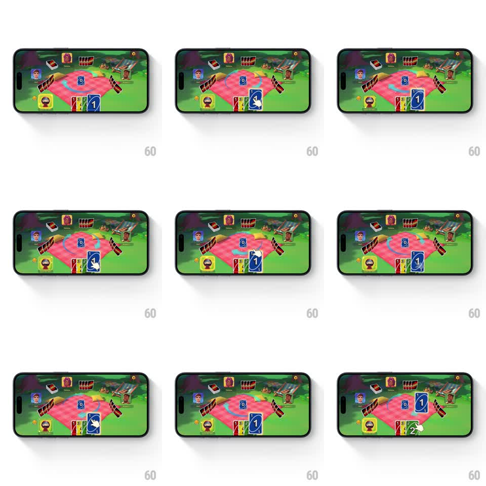

Media
Frame-by-frame

Rebuild this interaction 1:1: UNO's tutorial drag - a gloved hand icon shows the gesture, pulling a card from the player's hand up to the discard pile while a tooltip loop plays.

Rebuild this interaction 1:1: UNO's tutorial drag - a gloved hand icon shows the gesture, pulling a card from the player's hand up to the discard pile while a tooltip loop plays. ## Integration Integration: stack-agnostic spec - springs given as stiffness/damping, timed motions as duration + curve; map every value to your framework and animation library of choice. ## Scene Landscape UNO table: pink gingham blanket, player avatars around the edges, the player's hand fanned at the bottom, the blue discard pile at center with its swirling ring, and a cartoon gloved-hand cursor demonstrating the drag. ## Motion spec Pattern: guided-gesture tooltip loop, ~1.5s per cycle. - The gloved hand fades in over a playable card in the player's hand (300ms) and the card lifts (scale 1 to 1.1, slight tilt, 200ms) as the hand "grabs" it. - The hand drags the card along an arc toward the center pile (700ms, ease-in-out), the card trailing smoothly under the fingertip. - At the pile, the card releases onto the stack (flip settle, 200ms) and the hand fades out (250ms); the pile's swirl pulses brighter on the landing. - The loop resets: the card fades back into the hand and the cycle repeats after a 400ms pause. - The rest of the table idles - avatars breathe, the blanket is still. ## Calibration - The drag path is a gentle arc, not a straight line - it should read as a human gesture. - The hand never teleports; it exits and re-enters via fades at the loop boundary. ## Reduced motion Show the card on the pile with a static hint arrow. ## Don't miss - The card stays under the fingertip for the entire drag - no offset drift between hand and card. - The demonstration uses the actual playable card (matching color), not a generic placeholder.